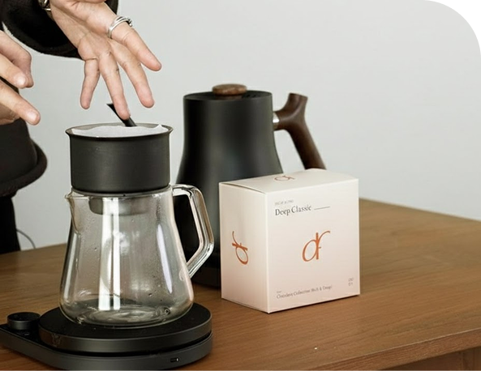
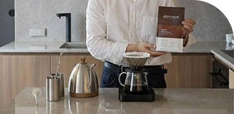
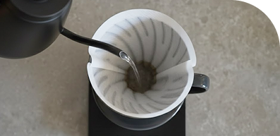
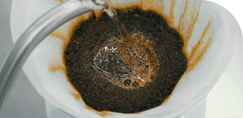
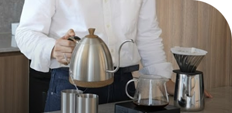
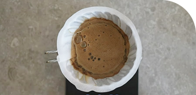
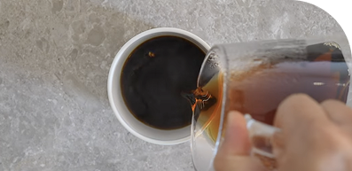
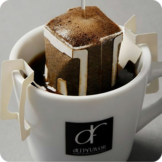
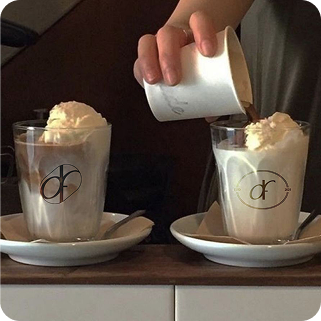

BREW GUIDE

브루잉이란 양조하다 우려내다를 뜻하는 brew에서 온 말로 뒤에 ~ing 하는중을 붙여 브루잉 즉, 우려 내는중 양조하는중이란 뜻을 가집니다.
브루잉 커피는 에스프레소보다 농도가 연하고 부드러운 것이 특징이며, 핸드 드립과 같은 의미로 쓰이기도 합니다.
Filter Guide
-

완벽한 한 잔은 정확한 계량에서 시작됩니다. 신선한 원두와 깨끗한 물, 그리고 도구들을 세팅합니다.
원두/물 비율: 권장 비율 (예: 1:15 또는 1:16) 안내 -

종이 필터의 잡미를 제거하고, 서버와 드리퍼를 따뜻하게 데워 추출 온도를 일정하게 유지합니다.
필터에 뜨거운 물을 골고루 부어준 뒤 서버의 물은 버려줍니다. -

커피가 부풀어 오르며 풍미가 살아나는 단계입니다.
원두 양의 2배 정도 물을 붓고 30~40초간 대기합니다. 커피 가루가 물을 머금고 가스를 배출할 수 있도록 소량의 물을 붓습니다.
-

본격적인 풍미 성분을 추출하는 단계입니다.
중심에서 바깥쪽으로 원을 그리며 부드럽게 물을 붓습니다. 전체 물 양의 약 40%를 사용하여 단맛과 산미의 밸런스를 잡습니다. -

부족한 농도를 채우고 깔끔하게 마무리하는 단계입니다.
나머지 물을 붓고 물이 모두 빠질 때까지 기다립니다. 추출 시간이 너무 길어지면 쓴맛이 날 수 있으니 주의합니다. -

추출된 커피를 가볍게 흔들어 농도를 균일하게 맞춘 뒤 즐깁니다.
Tip: 딥플레버 원두 특유의 테이스팅 노트를 확인하며 마시면 더욱 좋습니다.
Filter Recipe
깔끔한 핸드드립 한잔을 즐기실 수 있는 레시피입니다.
딥플레버와 함께 특별한 커피를 즐겨보세요.
Hot
-
에스프레소
-
-
뜨거운 물 220g
-
에스프레소
-
-
물 180g & 얼음
Ice
-
에스프레소
-
-
스팀우유 220g
-
에스프레소
-
-
우유 180g & 얼음
나만 알고 싶은 깊은 맛, 딥플레버 기록집
"한 잔의 커피에 담긴 진심,
딥플레버와 함께하는 당신의 일상을
들여다보세요."
-

디카페인러버
혼자 방문해서 1시간정도 독서했는데 편안한 자리에 앉아서 편안히 머물다 가네요 ☕️ 따뜻한 디카페인 라떼와 행복 충전 하고 가요 🤭💗
-

빈즈노트
종류들도 하나하나 다양한데다가 오늘의 커피를 마셨는데, 에티오피아 웨시 부키사 워시드 맛이 전체적으로 새콤하면서 풍미 깊은 맛 제대로 즐기기 너무 좋았습니다^^ 혼자 와도 너무 좋고 여럿이 방문하기도 너무 좋을것 같아요!
-

라떼홀릭
이번 서울 여행하면서 제일 맛있는 커피였어요. 라떼 선택하니까 직원분이 원두도 추천해주시더라구요. 가을온기 원두가 라떼랑 잘 어울린다고 해서 그대로 주문했는데 고소하면서 은은한 꽃향이 나서 제 입맛에 딱 맞았어요. 원두 향을 맡아보고 원두도 살 수 있어서 드립백도 하나 샀네요!
-


섭스토리
매장에서 마셔보고 맛있어서 계속 온라인으로 주문해서 마시고 있어요. 커피를 사랑하나 사정상 디카페인만 마셔야 되는데 다른 디카페인 커피들은 대부분 영혼이 없는 커피들이어서 커피를 거의 끊다시피 했었는데 다시 커피를 즐길수 있게 되서 넘 행복합니다.
-

라떼홀릭
생두 보관 창고와 로스터기가 다 들여다 보이는데 위생관리 또한 신경을 많이 쓰시는구나 싶었습니다. 커피는 역시 맛과 향 좋았습니다. 부산에도 매장 생기면 좋겠습니다.😊
-


딥플러버
매장에서 커피 맛있게 먹고 드립백 구매해왔습니다! 집에서 간편하게 딥플레버 즐기기..💗
Beyond Decaf, Depth of well-being.
Nurturing Specialty Decaf and Special Drinks.